Recorregut
V Circular Pantà d'Oliana — 7 i 8 de setembre de 2013
Calendari provisional
- 7 de setembre (17:00)
- Inici de la circular
- 8 de setembre (17:00)
- Tancament de la circular
La caminada, amb sortida i arribada a Oliana, comença habitualment el primer dissabte de setembre a les 17:00 hores des de la Plaça de la Reguereta d'Oliana (tocant a la C14) i a tan sols 450 metres sobre el nivell del mar.
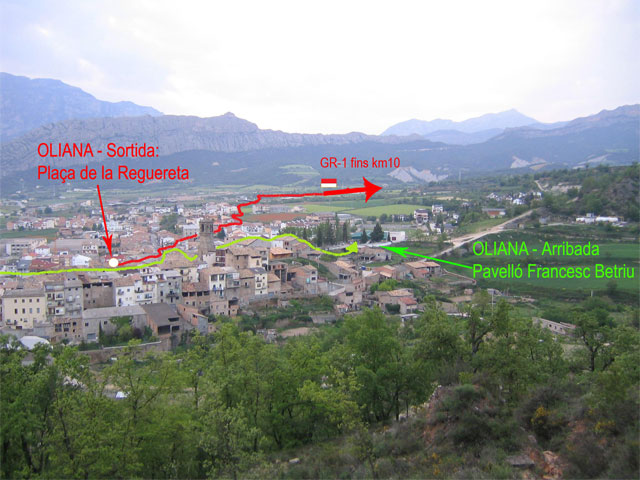
El camí s'inicia tot seguint el GR-1 cap al Coll del Vent i enfilant-se cap a la Collada del Sàlzer, havent passat per l'ermita de Sant Just.
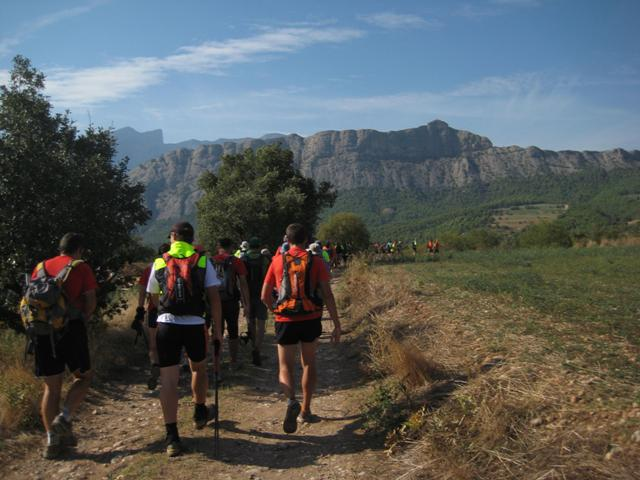
D'aquí continuem pujant fins a Serra-seca on trobem el primer control ja per sobre els 1000 metres. Serra Seca és un perfecte mirador de tota la plana de Lleida i altres muntanyes imponents com per exemple Montserrat, Port del Comte, Serra de Turp, Pirineus...
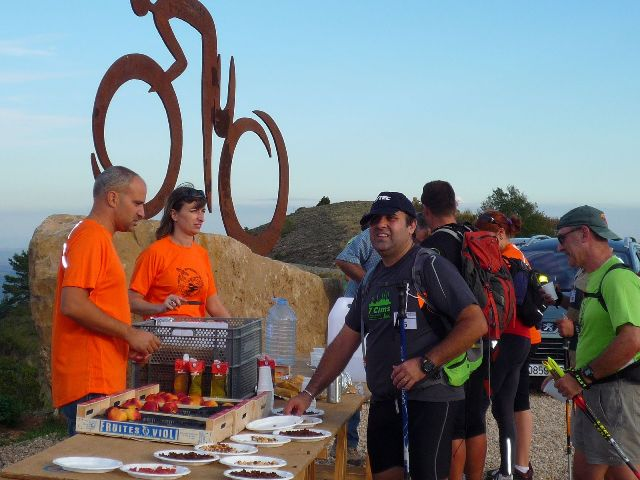
A partir d'aquí i havent resseguit el GR-1 una mica més d'uns 10km, anem cap a l'ermita de Santa Pelaia a uns 1200 metres entrant en territori de l'Obra Social Caixa Catalunya, propietària de la Muntanya d'Alinyà. Des d'aquí anem cap a la casa de Cal Gili al costat de la carretera L-401 que uneix Coll de Nargó i Sant Llorenç de Morunys.
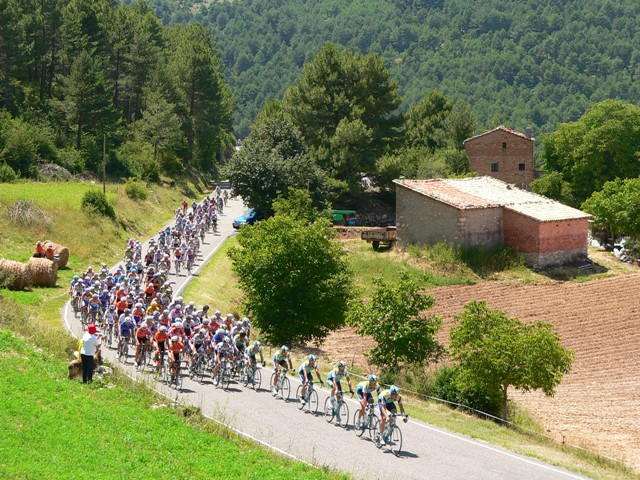
La resseguim breument i fins que prenem el camí ral que tot baixant alçada ens porta al barri de les Sorts d'Alinyà on ens espera el segon control al costat d'una font.
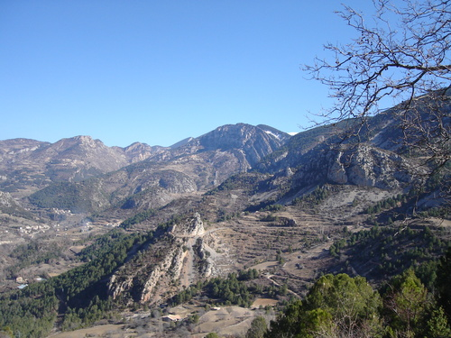
Havent fet un bon avituallament, acabem de baixar a Alinyà (1000m) on trobem una altra font i on creuem el riu de Perles. A partir d'aquí ens espera un tram on l'haver de pujar a 1500 metres significa que estem canviant de la vall del riu de Perles al riu Segre, tot travessant una serie de passos com són el Coll de la Nou, Coll de la Massana, Coll Durau i Collada de Cal Penya on hi haurà el control intermedi d'aquest llarg tram abans d'haver tornat a baixar metres.
Tot baixant pel Grau de Clarià arribem al nucli de Romanins, següent control, immediatament després al nucli de Fígols on els veïns estaran de Festa Major i en breu travessem el Segre, punt que significa l'inici del retorn a Oliana
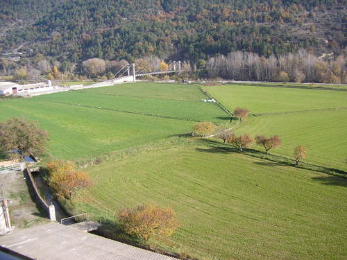
En haver travessat el Segre ja som a Organyà, tercer nucli pel que fa a habitants de la comarca de l'Alt Urgell, després de la Seu d'Urgell i Oliana. A Organyà ens espera un bon avituallament després d'haver baixat des de 1500 metres d'alçada i iniciar el retorn a Oliana pel marge dret del Segre.
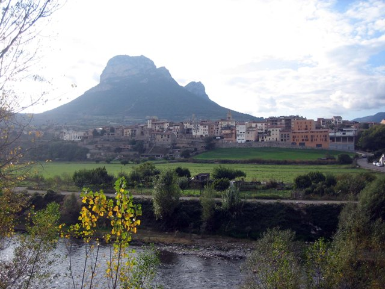
Des de la vila d'Organyà passem en pocs quilòmetres i sense massa desnivell a la vila de Coll de Nargó, tot havent travessat Fontanet i el seu riuet. A Coll de Nargó ens espera un nou avituallament abans d'iniciar l'últim ascens de la circular, per on travessarem la Serra d'Aubenç.
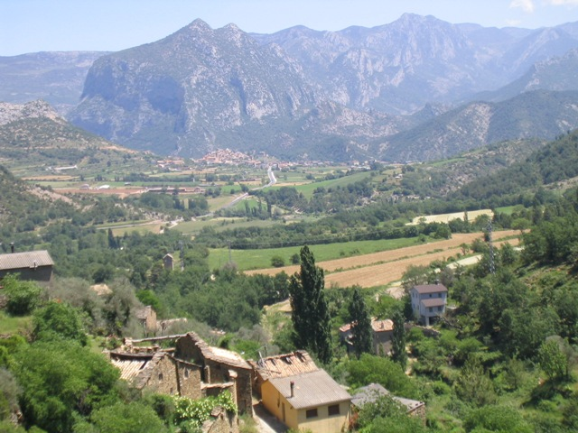
Una vegada sortim de Coll de Nargó, ens apropem planejant a Les Masies, a partir d'on un relativament suau ascens i passant per Aubàs primer, i Serradarques després (amb avituallament inclòs), arribem al Pla de Tolustre i que atravessant-lo arribem llavors a Font d’Isot, on ens espera un nou avituallament abans de fer l'últim ascens de la jornada.
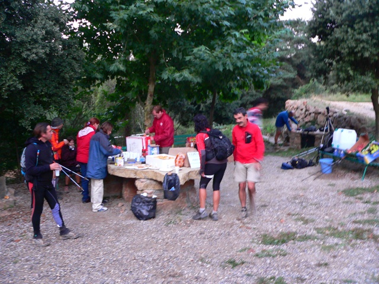
Aquest ascens ens porta a travessar i deixar la Serra d'Aubenç pel Coll de Creus, des d'on una vegada assolit baixem a Cortiuda on passem pel costat d'unes grans alzineres i on ens espera el penúltim avituallament de la marxa.
Des de Cortiuda reprenem poc després el descens cap al Segre per la Collada de Miamorta, després cap al Serrat de Torrent, i cap a Coll de Mu, mentres haurem contemplat el magnífic paisatge de Sant Honorat i la Roca del Corb.
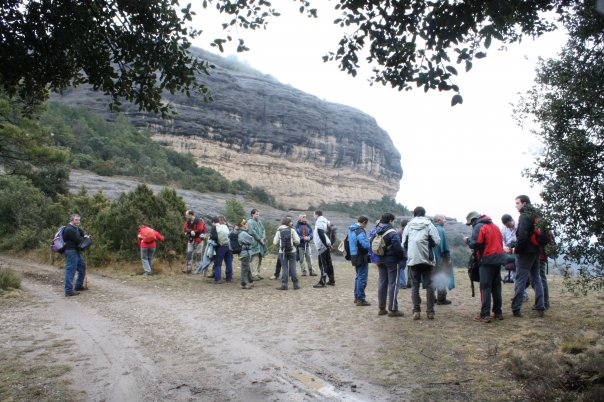
Tot contemplant la Roca del Corb anem baixant fins a Quatre Camins on escollim baixar cap a Peramola on ens podrem refrescar amb l'aigua dins la mateixa vila. Des d'allà cal a Can Boix i Tragó, visites prèvies abans de travessar el Segre per la palanca de Tragó.
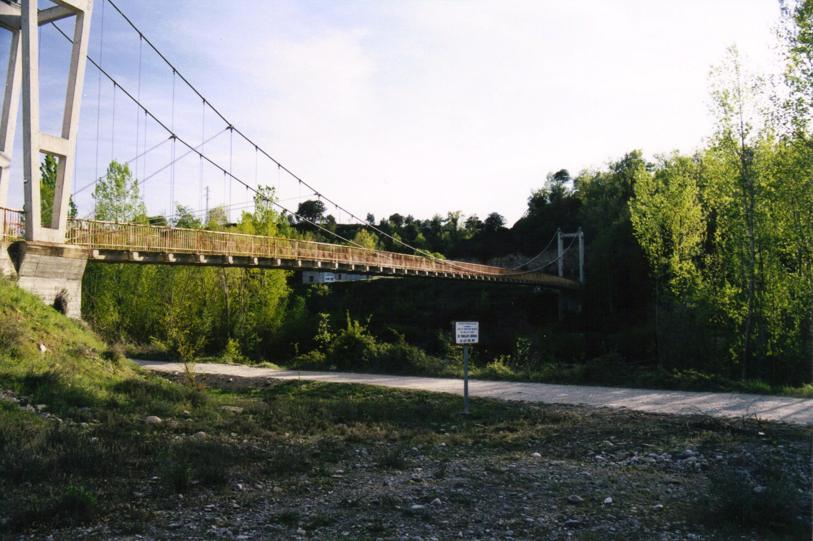
I des d'aquí arribar ja a Oliana per la seva Horta i acabar la circular després de 81km i 6200 metres de desnivell al pavelló Francesc Betriu.